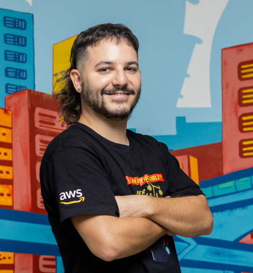
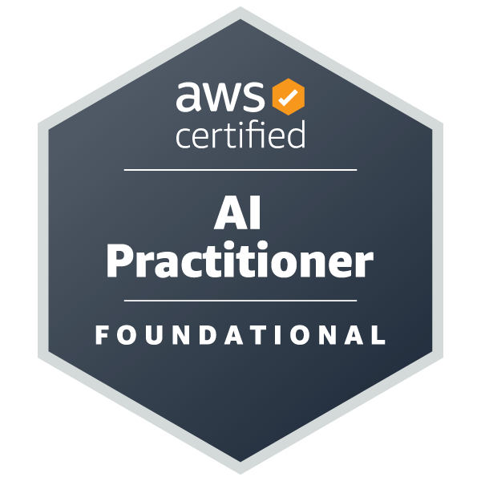
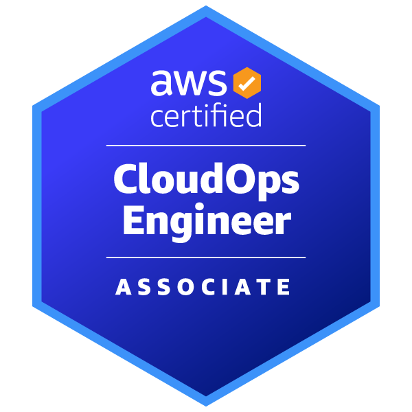
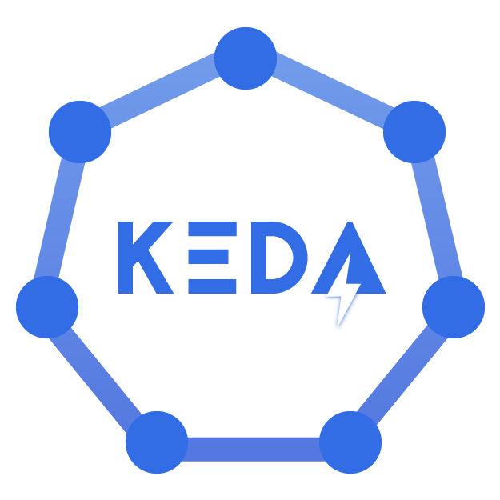
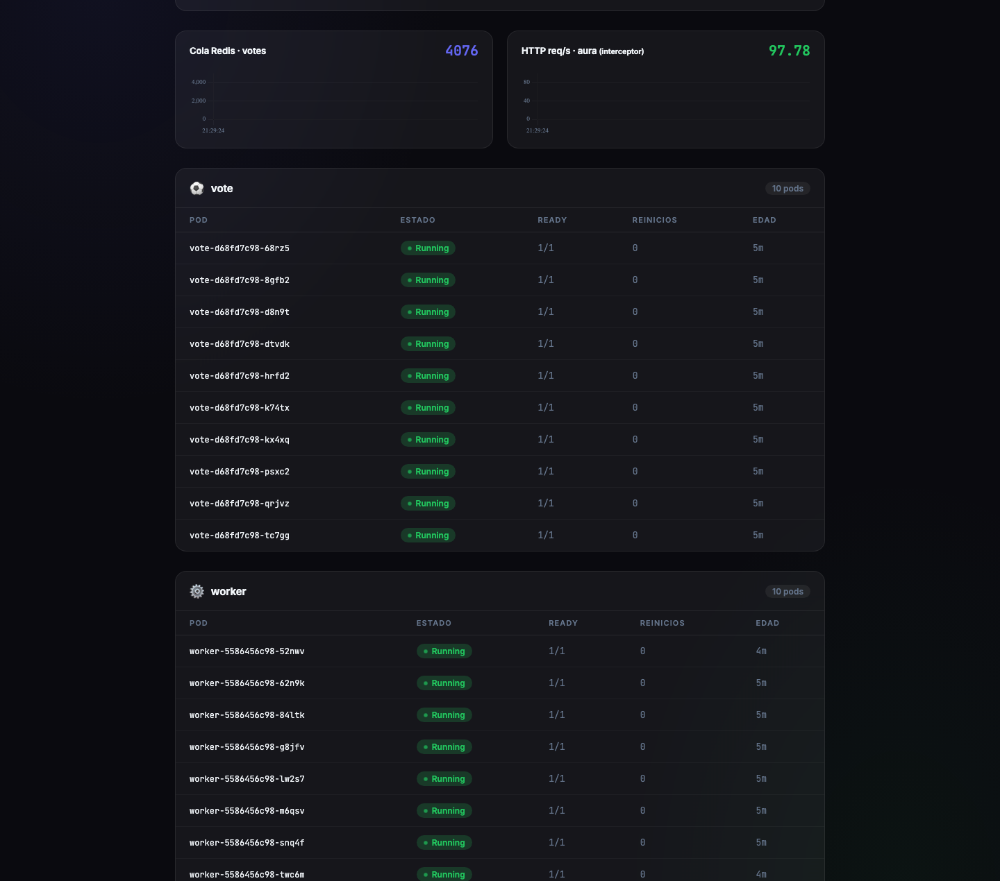

// AWS Student Community Day · UTN FRC, Córdoba · 14 de noviembre de 2026
Escalando apps en Kubernetes
De 0 a N pods con KEDA,
Lucas Blanco — DevOps & Cloud ·
lucasdevops.cloud
Bienvenida (30 s). Presentarse en una frase; la slide de quién soy
viene después. Bloque de apertura: minutos 0 a 3.
¿Quién soy?




Lucas Blanco · DevOps & Cloud
Tech Leader DevOps: opero plataformas en AWS para varias empresas
Cofundador de DiploDevOps (UNC, Argentina)
AWS Community Builder
Hago mi propia cerveza artesanal 🍻
Máximo 1 minuto. Credibilidad, no biografía. No nombrar empresas ni
clientes.
Qué vamos a ver hoy
Cuando termine, vas a saber:
por qué una app escala , por qué conviene escalarla con
métricas de negocio y no de infraestructura, y cómo hacer
que se apague sola cuando nadie la usa.
1
Lo mínimo de Kubernetes
Pods, Services y cómo entra el tráfico.
2
Escalar por requests
Por qué la CPU no alcanza y qué hace KEDA.
3
Demo en vivo
Con tu celular. Spoiler: vas a votar.
1 minuto. No revelar todavía de qué es la votación: la pregunta
aparece recién en la demo. Puente: "antes de escalar algo, ¿qué es
lo que escala?"
// introducción
Lo mínimo de
Minuto 3. Bloque de 5 minutos. Si la sala ya usa Kubernetes, pasar
la slide 5 en 30 segundos.
Pod, Deployment y Service
pod
tu contenedor
Pod = el contenedor corriendo.
Si se muere, no vuelve solo.
DEPLOYMENT · replicas: 3
pod
pod
pod
Deployment = "quiero N copias".
Si una muere, crea otra.
Service
nombre fijo
reparte entre las copias
Escalar = cambiar ese replicas: 3 . La pregunta de hoy es quién lo cambia y mirando qué .
2 minutos. Tres piezas, una por clic. Contenedor → Pod → Deployment
(cuántas copias) → Service (un nombre fijo que reparte entre las
copias). Fuente: https://kubernetes.io/docs/concepts/workloads/controllers/deployment/
y https://kubernetes.io/docs/concepts/services-networking/service/
Cómo entra el tráfico: Gateway API
internet
Gateway
la puerta
en AWS: un ALB
HTTPRoute
"si viene a este dominio,
mándalo a este Service"
Service
Dos YAML: uno para la puerta y uno para cada regla. La API estándar de Kubernetes para esto.
1,5 minutos. No comparar con Ingress (decisión de la charla). Gateway
= dónde escucha (puerto, TLS); HTTPRoute = reglas por dominio y path.
Fuente: https://gateway-api.sigs.k8s.io/
Novedad: EKS Auto Mode crea el ALB solo
Antes
Instalar y mantener un controlador
AWS Load Balancer Controller por Helm
Rol de IAM y CRDs a mano
Actualizarlo con cada versión
Desde octubre de 2026
Lo opera AWS dentro de Auto Mode
Aplicas Gateway y HTTPRoute
AWS crea el ALB y lo borra al borrar el Gateway
Pagas solo el balanceador
apiVersion: gateway.networking.k8s.io/v1
kind: GatewayClass
metadata: { name: eks-auto-alb }
spec:
controllerName: eks.amazonaws.com/gateway-alb
---
apiVersion: gateway.networking.k8s.io/v1
kind: Gateway
metadata: { name: aura-gateway }
spec:
gatewayClassName: eks-auto-alb
listeners:
- { name: https, protocol: HTTPS, port: 443 }
1,5 minutos. Anuncio del 2026-10-28: "Amazon EKS Auto Mode now
supports Kubernetes Gateway API"
(https://aws.amazon.com/about-aws/whats-new/2026/10/amazon-eks-auto-mode-kubernetes-gateway-api/).
ALB para rutas L7 (HTTPRoute, GRPCRoute) y NLB para L4 (TCPRoute,
UDPRoute) según el controllerName de la GatewayClass; se habilita con
update-cluster-config (elasticLoadBalancing + gatewayApi.crds.managed);
"Standard charges apply for the AWS load balancing resources
provisioned"; al borrar los recursos Auto Mode borra el balanceador
(https://docs.aws.amazon.com/eks/latest/userguide/auto-configure-gateway-api.html).
Es lo que usa la demo. El YAML real tiene además el certificado de
ACM. Puente: "La app ya tiene puerta. ¿Cuántos pods ponemos detrás?"
// el problema
¿Cuántos pods
Minuto 8. Bloque de 5 minutos.
Pocos pods o muchos pods: los dos salen mal
Pocos
Llega el pico y la app se cae 😵
Respuestas lentas, errores 502/503
El pico dura minutos; el enojo, más
Muchos
Pagas pods que no hacen nada 😴
Toda la noche prendidos "por las dudas"
Dimensionados para el peor día del año
Lo que queremos
Los pods justos, en el momento justo, sin que nadie tenga que mirar.
1 minuto. Ejemplo cercano: la inscripción a materias, la venta de
entradas, todos votando a la vez. Preguntar a mano alzada quién vio
caerse un sistema de inscripción (solo en voz, no en pantalla).
Dos formas de escalar
Vertical
Un pod más grande
Más CPU y memoria al mismo pod
Tiene techo: el tamaño del nodo
Suele implicar reiniciar el pod
Horizontal
Más pods iguales
Copias detrás del mismo Service
Sube y baja sin cortar el servicio
El camino normal para apps web
1 minuto. Hoy hablamos solo de horizontal. Vertical existe (VPA) pero
queda fuera.
El clásico: HPA mirando la CPU
El Horizontal Pod Autoscaler viene con Kubernetes
Le dices "quiero la CPU al 50 %" y él ajusta las réplicas
réplicas = ⌈ réplicas_actuales × métrica_actual / métrica_objetivo ⌉
Ejemplo: 2 pods al 90 % con objetivo 50 %
→ ⌈2 × 90 / 50⌉ = ⌈3,6⌉ = 4 pods
1,5 minutos. Fórmula textual de la documentación:
desiredReplicas = ceil[currentReplicas * (currentMetricValue /
desiredMetricValue)]
(https://kubernetes.io/docs/tasks/run-application/horizontal-pod-autoscale/#algorithm-details).
Hacer la cuenta en voz alta.
Dónde se queda corta la CPU
Llega tarde
La app espera, no calcula
Espera a la base o a otra API con la CPU baja
Los pedidos se acumulan y el HPA no se entera
No baja de 1
Siempre hay un pod prendido
El mínimo del HPA es 1 réplica
Sin tráfico igual pagas ese pod (y su nodo)
La idea
Escalar por métricas de negocio , no de infraestructura.
La CPU es un síntoma; lo que importa son los pedidos que llegan por segundo .
1,5 minutos. Mensaje central de la charla: métricas de negocio
(pedidos, votos, mensajes en cola, usuarios conectados) antes que de
infraestructura (CPU, memoria). Ejemplos: un e-commerce escala por
carritos o pedidos por minuto; un sistema de inscripción, por alumnos
en la cola. minReplicas por defecto es 1; bajar a 0 requiere el
feature gate HPAScaleToZero, en alpha
(https://kubernetes.io/docs/tasks/run-application/horizontal-pod-autoscale/).
A VERIFICAR estado en 1.36 (versión del cluster de la demo) antes de afirmarlo en Q&A. Puente: "¿y
si escalamos por los pedidos que llegan?"
// escalar por requests
Requests por segundo
Minuto 13. Bloque de 8 minutos, el corazón de la charla.
KEDA: escalar por eventos

Escala por lo que pasa afuera : mensajes en una cola, una métrica, un horario… o pedidos HTTP
De 0 a 1 lo hace KEDA; de 1 a N se lo pasa al HPA de siempre
Por eso puede apagar del todo una app sin tráfico
Cola
"Hay 500 mensajes en Redis o SQS"
Horario
"De 9 a 18, mínimo 3 pods"
HTTP
"Llegan 45 pedidos por segundo"
Las tres hablan del negocio (pedidos, mensajes, horarios), no de la máquina.
1,5 minutos. KEDA activa y desactiva el Deployment para ir y volver
de cero y actúa como servidor de métricas para el HPA
(https://keda.sh/docs/latest/concepts/). Proyecto graduado de la
CNCF (https://www.cncf.io/projects/keda/). El worker de la demo
escala por la cola de Redis: lo mostramos al final.
KEDA HTTP Add-on: el interceptor
ALB
Interceptor
cuenta los pedidos
y los retiene si hay 0 pods
APP · DEPLOYMENT
0 pods
KEDA
calcula réplicas
req/s
"necesito 3 pods"
3 pods
2,5 minutos. Tres clics: (1) la app está en 0 y el pedido queda
esperando en el interceptor; (2) el interceptor le pasa la tasa de
pedidos a KEDA, que decide cuántos pods; (3) arrancan los pods y el
interceptor libera los pedidos retenidos. Piezas del add-on:
operator, interceptor y scaler (https://github.com/kedacore/http-add-on).
El add-on está en beta según su README (A VERIFICAR el día de la
charla). El HTTPRoute de la demo apunta al interceptor, no a la app.
El YAML que lo decide
apiVersion: http.keda.sh/v1alpha1
kind: HTTPScaledObject
metadata:
name: vote
spec:
hosts: [aura.lucasdevops.cloud]
scaleTargetRef:
name: vote
replicas:
min: 0
max: 10
scalingMetric:
requestRate:
targetValue: 10 # req/s por pod
window: 60s
scaledownPeriod: 10
min 0 : sin tráfico, se apaga
max 10 : el techo que protege la factura
10 req/s por pod :
45 req/s → ⌈45 / 10⌉ = 5 pods
2 minutos. Recorrer el YAML por bloques (los clics resaltan las
líneas). Es el HTTPScaledObject de la demo, recortado. Campos según
https://github.com/kedacore/http-add-on (docs de HTTPScaledObject en
el repo). scaledownPeriod: segundos sin tráfico antes de volver a 0.
Dos niveles: pods y nodos
NODO 1 · LLENO
Pending: no entran
NODO 2 · NUEVO
EKS Auto Mode ve los pods pendientes y agrega un nodo del tamaño justo · cuando sobra, lo saca
1,5 minutos. KEDA decide pods; si no entran, quedan Pending y Auto
Mode (Karpenter operado por AWS) crea un nodo; cuando se vacía, lo
consolida (https://docs.aws.amazon.com/eks/latest/userguide/automode.html).
Medido en el ensayo (2026-11-13): con ~100 req/s, pods Pending a los
~24 s y nodo Spot nuevo Ready a los ~46 s; vote llegó a 10 réplicas en
~70 s. Al cortar la carga volvió a 0 en ~95 s; el nodo extra no se
consolidó en los 8 minutos siguientes (no prometer que "se va al
instante").
El precio de escalar a 0: el cold start
El primer pedido espera lo que tarda en arrancar un pod. 🥶
Sirve para
Tráfico con picos y silencios
Entornos de desarrollo y pruebas
APIs internas, herramientas, demos
Apps de eventos: inscripciones, votaciones
Ojo con
Lo que no puede esperar
La home de un e-commerce
Apps que tardan mucho en arrancar
Ahí: min: 1 o más, y KEDA escala igual por req/s
1 minuto. Cold start medido en el ensayo (2026-11-13): 5,4 s de 0 a 1
pod con el nodo ya creado. Si además hace falta un nodo nuevo, sumar
unos 45 s. Puente: "basta de
diapositivas, vamos a verlo con ustedes".
// demo en vivo
¿Quién tiene más aura?
aura.lucasdevops.cloud
Ahora mismo la app está en 0 pods . Vota y mira la pantalla.
Minuto 21. 10 minutos. Guion en demo/README.md. Orden: panel con
vote en 0 → QR, la sala vota → primer pod (cold start) → generador
de carga desde el panel → réplicas suben (y un nodo, si hace falta)
→ cortar la carga → vuelve a 0 → el worker escaló por la cola de
Redis → resultado final. Si la red falla, pasar a las dos slides
ocultas de plan B y decir que son capturas.
Plan B · Escalando con carga

Captura del ensayo. Los pedidos por segundo suben y las réplicas los siguen.
Slide oculta: solo si la demo en vivo falla. Captura pendiente del
ensayo.
Plan B · De vuelta a 0
Captura del ensayo. Sin tráfico, la app vuelve a 0 pods.
Slide oculta. Captura pendiente.
Antes de usarlo en serio
Cold start
Mídelo
Imagen chica, arranque rápido
Si no se tolera, min: 1
Techo
Siempre un max
Un bot no te escala a 500 pods
Protege la base y la factura
Una pieza más
El interceptor
Todo el tráfico pasa por él
Dale réplicas y monitoréalo
1,5 minutos. El HTTP Add-on sigue en beta (A VERIFICAR en
https://github.com/kedacore/http-add-on el día de la charla); para
producción hay alternativas que escalan por req/s leyendo métricas
del balanceador o de Prometheus con KEDA, sin interceptor (pero sin nadie
que retenga los pedidos mientras la app está en 0).
¿Cómo sigo desde acá?
KEDA : la documentación tiene ejemplos por cada tipo de evento —
keda.sh
Gateway API en EKS Auto Mode : la guía oficial, corta —
docs.aws.amazon.com/eks
Pruébalo en local con kind o minikube: KEDA y el add-on se instalan con Helm
AWS Skill Builder : cursos gratuitos de contenedores —
skillbuilder.aws
Recordatorio
Un cluster EKS cuesta por hora aunque esté vacío. Alarma de presupuesto primero, experimentos después. 😉
1 minuto. Si se publica el repo de la demo, agregar el link acá.
Precio del control plane solo si preguntan:
https://aws.amazon.com/eks/pricing/
// gracias
Los pods justos,
¿Preguntas? · Lucas Blanco ·
lucasdevops.cloud
Minuto 35. Dejar esta slide durante todo el Q&A (10 minutos).